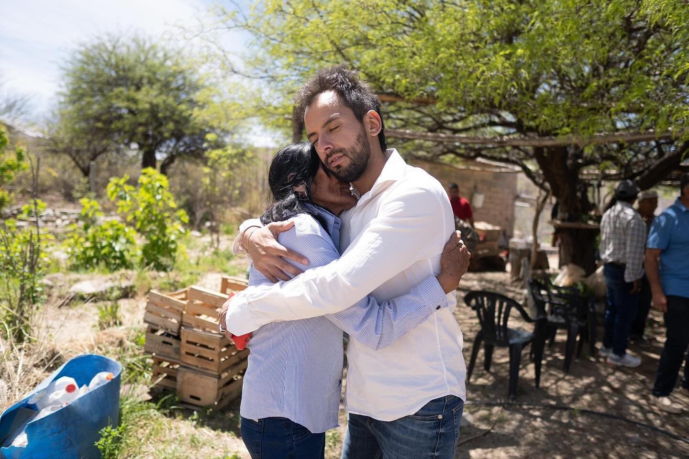

Interior de
Catamarca
Ningún departamento queda afuera. Comprometidos con el desarrollo integral de todo el territorio provincial.
Una Catamarca unida, de punta a punta
Catamarca tiene 16 departamentos distribuidos en más de 100.000 km². Muchas de esas comunidades históricamente relegadas hoy tienen en Exequiel Moreno un representante que las escucha y lleva sus demandas a la Legislatura provincial.
Desde la Puna hasta el Valle Central, desde la cordillera hasta los llanos del este, cada rincón de Catamarca merece la misma atención y los mismos recursos.

Actividades por zona
Belén y Antofagasta
Recorrida por comunidades puneñas, gestión de agua potable y caminos rurales. Articulación con municipios para proyectos de infraestructura básica.
Tinogasta y Pomán
Apoyo a productores vitivinícolas, desarrollo turístico sustentable y conectividad vial hacia localidades cordilleranas aisladas.
Santa María y Andalgalá
Impulso a la economía regional a través del turismo arqueológico y natural, con proyectos de señalización y capacitación a guías locales.
Capital y Valle Viejo
Trabajo legislativo en la Cámara, reuniones con organizaciones sociales y articulación de programas provinciales en los barrios más vulnerables.
Capayán y Paclín
Apoyo al sector agropecuario, acceso a créditos productivos y mejora de infraestructura educativa en escuelas rurales dispersas.
Hacenos llegar tu pedido
Si tu comunidad tiene una necesidad urgente, contanos. Exequiel y su equipo evalúan cada solicitud y buscan respuestas concretas.
Últimas visitas al interior
Reunión en Belén con productores
Encuentro con productores de nuez y olivo para abordar la problemática de acceso a mercados y financiamiento.
Visita a escuelas rurales en Paclín
Recorrida por tres escuelas del departamento Paclín para evaluar el estado de la infraestructura y las necesidades docentes.
Asamblea vecinal en Tinogasta
Participación en asamblea comunitaria para relevar necesidades de agua potable en sectores rurales del departamento.
Inauguración de centro comunitario en Andalgalá
Presencia en la apertura del nuevo centro comunitario que beneficiará a más de 300 familias del sector norte del departamento.
Recorrida por comunidades indígenas en Antofagasta
Encuentro con autoridades y referentes de comunidades originarias para abordar el reconocimiento territorial y acceso a servicios básicos.
Entrega de materiales en escuelas de Santa María
Gestión y entrega de equipamiento tecnológico y material didáctico para tres escuelas primarias del departamento.
Catamarca crece con todos
El interior no es el margen de la provincia, es su corazón. Cada comunidad, por pequeña que sea, tiene derecho a la misma atención y los mismos recursos.